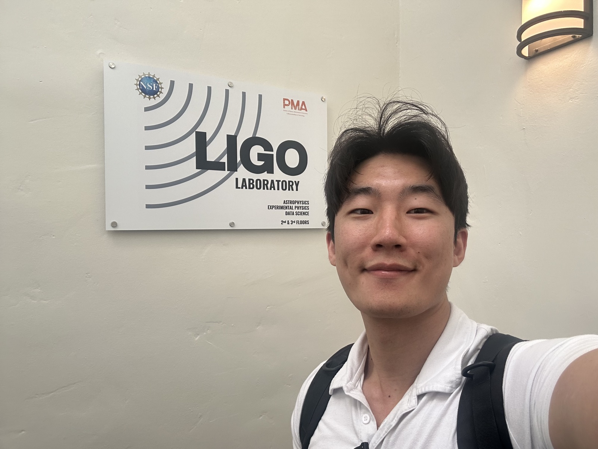
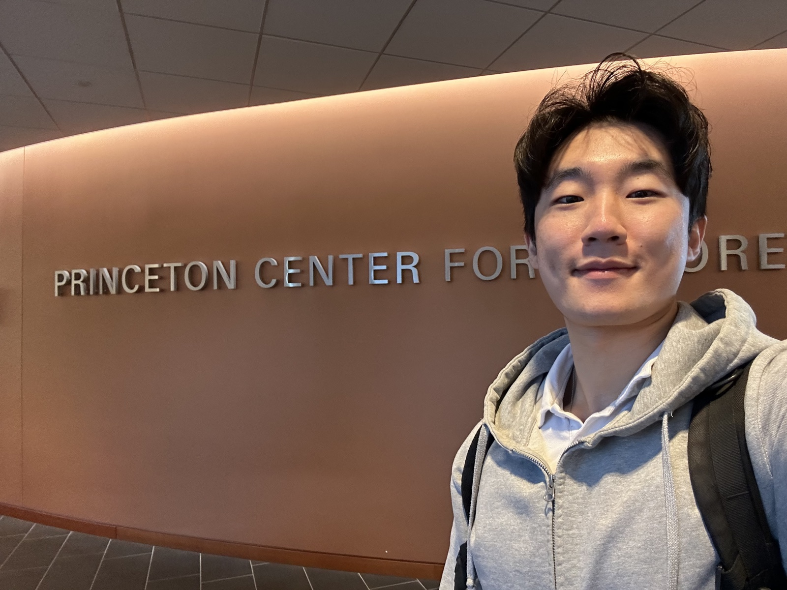
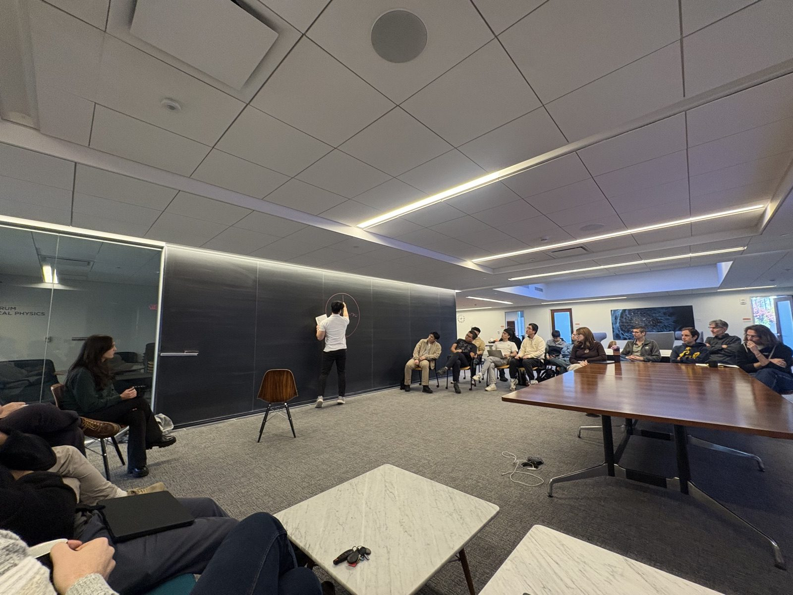
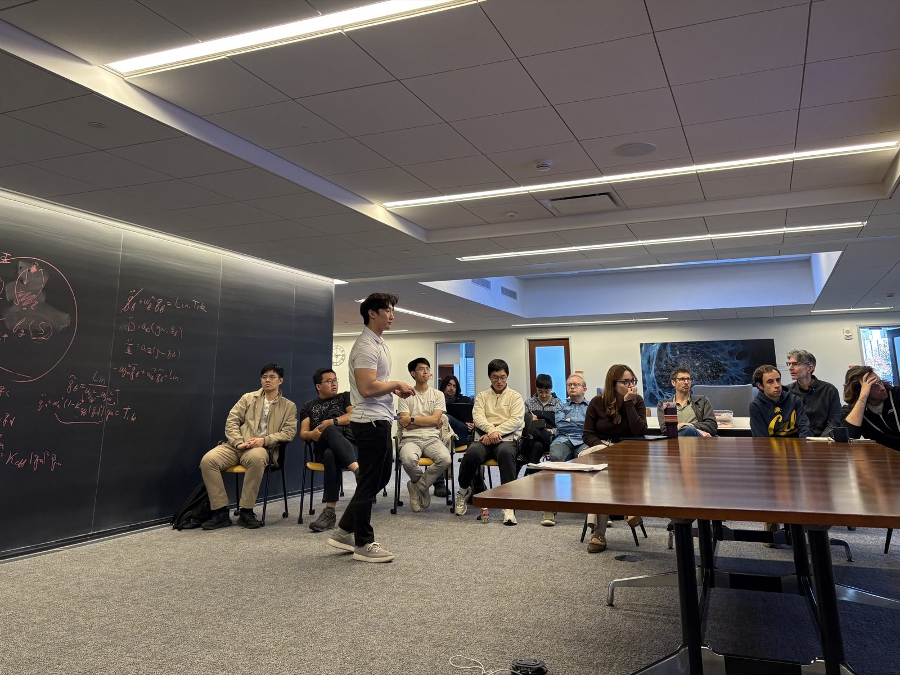
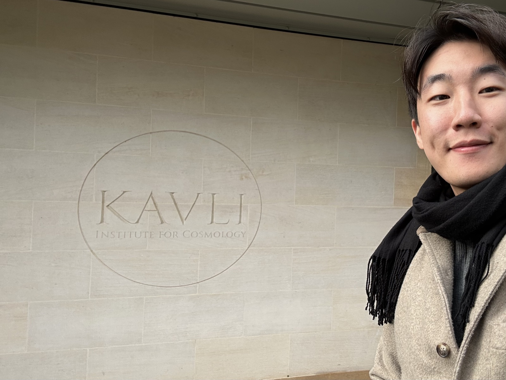

Job Talk Circuit
I finally finished my job talk circuit! It was an extremely fruitful time where I visited Caltech, Harvard, Princeton, IAS, ISTA, Birmingham, and Cambridge to talk about my research and to get to know fellow researchers. The entire trip took roughly a month. Here are some records of my visit.
Caltech
I started off with the LIGO seminar at Caltech (hosted by Elias and Sophie Bini). Elias couldn't make it to the meeting, as he was on parental leave with his newborn—congratulations again! But I was able to talk with Saul (Zoom), Alan Weinstein, Emily, and three others whose names I didn't catch. The audience was very kind and attentive, thank you all.

Pasadena was so hot. In fact, Sunny told me Pasadena had recently had a record-breaking heatwave. It didn't take much to convince me; the silicone casing in my car was melting by the time I got back to it. After the talk, I dropped by the Carnegie Observatory to hang out with Sunny. He showed me around at Carnegie—it was a very slick building that reminded me of the Griffith Observatory somehow. Sunny treated me to some Korean food afterward. Sunny's an expert on white dwarfs. I hope to overlap with him on some LISA studies in the future.
Harvard
The next destination was Boston. During my flight, the Expedia host sent me a text that my reservation had to be canceled due to some emergency. Utter disaster! As soon as I landed in BOS, I was on a frantic, last-minute search for accommodation. I ended up staying at the enVision Hotel. I figured something would have to make up for this bad luck! I took the initiative and ordered in a nice dinner.
The next day, I went to Harvard CfA and gave a talk at the joint seminar between Edo Berger's and Ashley Villar's groups (hosted by Edo and Peter Blanchard). After the talk, I talked with Morgan about surface shock heating and mass loss, and with Harsh. Both of them were genuinely nice people to talk to. During the week of my visit, the ITC was hosting the massive star seminar, and I audited the event.
Princeton, IAS
Wrapping up my stay in Boston, I flew to New Jersey and headed to Princeton. I arrived on Saturday and spent some time polishing up my presentation in a coffee shop in MarketFair. In the coffee shop, I had an interesting encounter with some start-up founders, which I will talk about separately.

I gave a talk at a joint seminar of Eliot's and Frans's groups. I greatly enjoyed mixing in blackboard talk with slides. Thank you Eliot for recommending the format, and both Eliot and Frans for facilitating my visit. Afterward, I had a great time chatting with Yoonsoo and Ashley at PCTS; Abhishek, Jaime, Maxime, and Hamed at LFTP; Eliot and Chris from the astrophysics department; also Matt visiting from Vanderbilt.


Then, Jim kindly hosted me at IAS, and I was invited to give a talk at IAS AstroCoffee, which takes place at the astrophysics library in the institute. What an amazing opportunity! In fact, last year, I was at IAS for PiTP 20251 and stayed at Freeman Dyson's actual house for two weeks. During the summer school, I used to go into this library and work on my own things after the program. I was thrilled to come back to this library after that experience.
After the AstroCoffee talk, I got good questions from James Beattie. Alex walked me through NICER observations and their systematics, which would be relevant to my proposed research, and Jacob filled me in on a few things in numerical-relativity simulations. I also caught up with Gimmy and Jim. Among the audience was Steven Balbus as well, whose face I didn't know at the time, but...
ISTA
The next trip was to Austria, specifically, to ISTA for WAF 2026 near Vienna. On the first day, I introduced myself to Gordon, who had already agreed to host me in Cambridge after the conference. Then, I spotted a face I recognized from IAS: Steven Balbus. I walked up to him and started chatting, and ended up having lunch, together with Caroline Terquem from Oxford. Steven kindly offered to host me in Oxford afterward if a speaker slot was available, and I was genuinely thrilled. The visit ended up not happening as it was nearly the end of term, but I was glad to have met him.
The conference was a lot of fun. I got to know Nick, Joel, Callum, Nathan, Marianna, and Thierry. All of them gave great talks on IGW / B-field, disks (or discs if you will), subsystem modes, and an experiment that resembled SASI modes! We went to "Redlingerhütte," a cozy pub by the hiking trail. I had schnitzel (too much) with Sturm and some Austrian beer. I had so much fun chatting with Callum, Nathan, Gordon, and Thierry there. The anesthesia (or anaesthesia if you will) story of Callum's still makes me laugh.
Side note: I'd been practicing my German so it was the perfect opportunity to try it out. My German was mostly one-way; it worked until they actually replied. Also, sometimes I got slammed with English replies after my German attempts. But I enjoyed ordering coffees and pretzels in German.
Birmingham
The last leg of my job talk trip was in the UK. The UK is a very special place for me thanks to Hannah. Hannah and I were reunited after months apart and spent the weekend together. On Monday, I went to the University of Birmingham, which also means a lot to me! Patricia and Geraint hosted me again and I spoke at a special seminar. Geraint asked me really good questions that sparked my own curiosity. It was good to see Patricia, Geraint, and Adam again.
Cambridge, almost
Now it was Cambridge's turn! I had booked the 8:40 AM FlixBus from the city centre. The day before, it had taken about 25 minutes to go from the city centre to Hannah's place, so I booked an Uber at about 8 AM to give it a little bit of buffer for the commuting traffic. But the traffic came back to bite me. I suffered through the traffic with my Uber driver, and in fact, trauma-bonded over it. We ended up stopping by one of the coffee places close by the route for some caffeine. I got dropped off at 9:30 AM—nowhere near in time for my departure.
I booked another bus at 3 PM, and I did not dare to go back to Hannah's place. I stayed in one of the coffee shops in the Bullring. I caught a glimpse of the German market that was about to open for Christmas.
Cambridge
I finally got to Cambridge. The accommodation came with a small garden. It was right next to this really beautiful shop in the corner of the street. I was tempted to try some fish and chips there, but it looked quite full.
The next day I went to DAMTP and chatted with Roman. I was jealous of his collection of Landau & Lifshitz in original Russian! I may have been over-caffeinated, which made me a little theatrical, and I tried out some of my broken Russian, which has been fading quickly since my two years of classes. Roman patiently bore with me. Somehow this job talk trip was becoming my journey of broken languages.
Then I went to IoA and KICC to explore and maybe run into people working on gravitational waves. Some kind of luncheon seemed to be happening, and I found myself in the middle of everyone chatting. Then, Callum found me and it was great to see a familiar face! We had fun chats and Callum generously offered to host me at the protoplanetary disk (disc) meeting the day after.

I gave a talk at a DAMTP seminar. Meng, Marianna, Roman, Callum, and Uli asked good questions! John Papaloizou of the Papaloizou-Pringle instability was in the crowd as well. Gordon was away. The talk went smoothly.
The next day, Callum and Cathie hosted me in their group meeting. I got to listen again to Callum's great review talk. After the meeting, I went to KICC to grab lunch with Nikhil. Nikhil invited me to the Fellows' dining room at Churchill College. Nikhil told me about the implications of my work for multi-messenger analyses, and I had a great time learning about his and his group's interests.
Done, finally
This sums up my "epic" job tour (quoting Marianna). First of all, big thanks to my PhD advisor Teja for making this possible. Without his support and network, this would've never happened.
I would say that the most fruitful part of the tour was not the postdoc job prospects themselves. Rather it was getting to know all these people in person, learning about their work, and knowing that I can reach out to them whenever I need their expertise.
Academia, or at least theoretical physics, is going through a time of great uncertainty. Whether it's due to funding or the rapidly growing capabilities of artificial intelligence, it's unclear what the future of academia will look like. I don't know what's in front of me, but I'm sure this trip will be one of the most memorable parts of this year.
- 1 As a side note, I got to chat with June Huh by complete coincidence during that time.